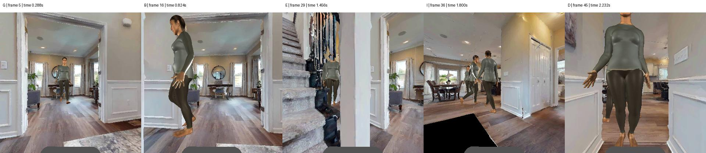
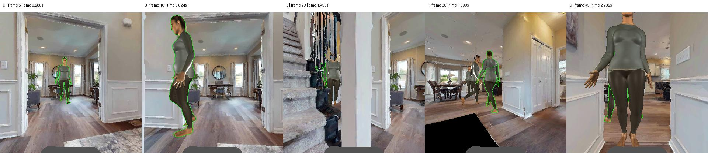

QA HOLD: all 12 independent conditions and 2 matched controls are excluded from primary scoring pending review. This page contains gold and private target overlays; never send it as a model input.
Source: CPM-AT-175, historical failed run. Current images were recaptured by replaying its stored velocity commands in Habitat. They are not direct extractions from the original CPM video, and no fresh CPM policy was run.
The stored chronology is consistent: G → B → E → I → D. This does not certify a uniquely identifiable image-only order. Several people share the same appearance; E severely occludes the target, D is dominated by a different foreground person, and camera motion changes the view substantially.

Green outlines here are audit overlays on all five frames; they are not additional images supplied in the quiz.

Frames 5–45, visual playback at 20 fps. Use measured engine times in the table as the timing evidence.
| Label | Frame | Time (s) | Target pixels (% of image) | Largest other person (%) | Visible people | Robot yaw (degrees) |
|---|---|---|---|---|---|---|
| G | 5 | 0.288 | 1.87 | 0.0 | 1 | -102.05 |
| B | 16 | 0.824 | 9.6 | 0.0 | 1 | -85.87 |
| E | 29 | 1.456 | 0.36 | 2.53 | 2 | -44.01 |
| I | 36 | 1.8 | 3.22 | 1.74 | 3 | -31.34 |
| D | 45 | 2.232 | 1.05 | 20.21 | 3 | -0.03 |
{
"event_id": "MD2-AT-02",
"source_run_id": "CPM-AT-175",
"source_control_path": "/home/ytyan/Rao/opentrackvla_probe_20260517_from_yty_20260612/opentrackvla_probe_20260517/artifacts/cpm_official_200_capture_20260901/at/shard1/episodes/at_fail_175/control.json",
"source_control_sha256_matches": true,
"collection_mode": "recorded_cpm_command_replay",
"directly_extracted_original_CPM_video": false,
"fresh_CPM_policy_inference": false,
"capture_seed": 20261115,
"chronological_gold_matches_engine_time": true,
"recorded_order": [
"G",
"B",
"E",
"I",
"D"
],
"frames": [
{
"label": "G",
"frame": 5,
"time_s": 0.28800000000000014,
"public_image_matches_record": true
},
{
"label": "B",
"frame": 16,
"time_s": 0.8240000000000006,
"public_image_matches_record": true
},
{
"label": "E",
"frame": 29,
"time_s": 1.456000000000001,
"public_image_matches_record": true
},
{
"label": "I",
"frame": 36,
"time_s": 1.8000000000000014,
"public_image_matches_record": true
},
{
"label": "D",
"frame": 45,
"time_s": 2.2320000000000015,
"public_image_matches_record": true
}
],
"visual_review_conclusion": "Temporal recording is consistent, but uniqueness of image-only ordering is not established. Identical-looking distractors, severe target occlusion in E, foreground dominance in D and substantial camera rotation make this event unsuitable for unique-order primary scoring without further review.",
"decision": "QA_HOLD_ALL_12_CONDITIONS_AND_2_MATCHED_CONTROLS",
"new_model_calls": 0,
"gold_changed": false,
"images_changed": false
}